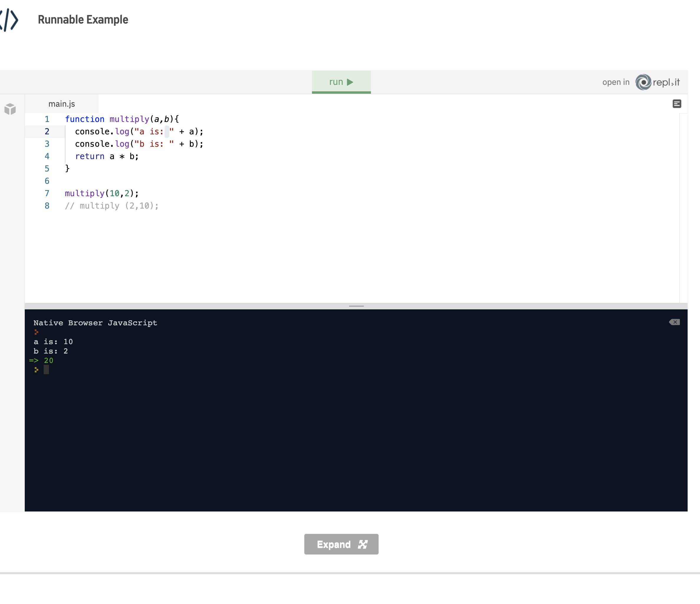
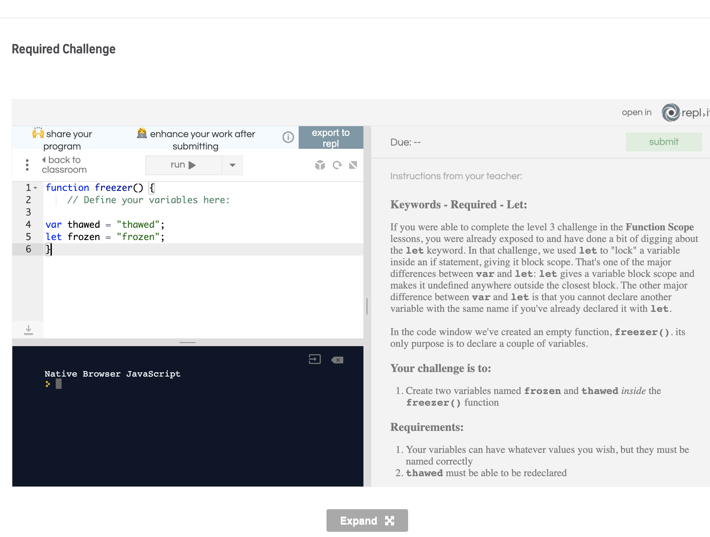

functions are reusable blocks of code which perform a specific task, in Javascript we declare a function by using the function keyword followed by a name and parameters in ()
Functions are one of the core concepts in every programming language. You might also hear them being called "subroutines" or "procedures". They sound complicated, but the concept is actually very simple - functions allow us to reuse code. This means that we write code once and use it many times. Let's take a real-world example. Imagine how inconvenient it would be if, every time you wanted to go shopping, you had to sit down and build a bicycle from scratch! In the real world, something is constructed once and used many times. It's the same with code too. Imagine that you want to multiply two numbers. It could be inconvenient and time-consuming to write the same code over and over again a * b. It is better to write it once, turn it into a function and then call it whenever you need it. This is a very simple example, normally there would be much more logic and code in our function than just multiplication. It would be super complicated if a developer had to repeat all that logic each time she/he needs to achieve some task, just as it would be inconvenient to build a bicycle every time we need it. Functions enable us to think about the problem once, create a solution, store the solution in a function and then reuse that solution whenever we come to the same problem. Cool, right? It is a magic word that solves a problem. You come across two numbers, you want to multiply them, you just shout multiply() and bam! Two numbers are multiplied! Let’s declare such a function and shout that magic word:

First use function keyword, then add the name of the function and then add, if needed, parameters in the parenthesis
function functionName(parameters) { code to be executed }
First, we use the function keyword. This is a reserved word in JavaScript. Secondly, we give the function a name and finally, we supply any parameters inside the parentheses. We'll talk more about naming functions and passing parameters in a minute. First, let’s declare a function that says "hello" and let’s name it hello
is a naming convention for functions defining a set of rules for naming functions--- we give our functions meaningful names.
There are specific rules every developer should follow when naming functions. Functions should be named so that they are easily understood by other developers. When you name your function, try to give it a name that everyone will immediately know what that function does. Don’t name it x or a. Nobody will understand its purpose. ALso, resist the urge to use novelty names for functions. It might be tempting to name all of your functions after Avengers characters, but thor() is not usually an intuitive function name. We name functions, like our variables, so that their purpose is immediately evident. One more thing needs to be said. When you name your function validateEmail(), that function should only validate email. Nothing else. Don’t put other functionality in it. Don’t calculate the mass of Mars in it. The name should describe what the function does. If you want to calculate the mass of Mars put the code in another function called calculateTheMassOfMars() instead.
parameters are the values that functions can accept. they allow us to pass arguments to functions
we activate it by adding comma separated values betwenn the () in a function definition
function functionName(parameters) The parameters are the designated placeholder names for values that we wish to pass to the function. We can pass any number of parameters into a function and they are separated with a comma. Inside the function, the parameters act as variables that are initialised with the values we've passed in. In the below example we define a function that contains just two parameters – a and b

At line 1 we create the definition of our multiply function, which contains the parameters a and b. These parameters are used as variable names that can be referenced inside of this function. We can see this at line 4. At line 9 we invoke the function by passing the values that we wish to use within the multiply function. The values that we pass are called arguments.
a local variable available within a function, it is a value which was passed into the function, we use it by manipulating values inside of a function
A function's parameters are the special variables used by a function to handle this input, whereas the arguments are the values provided for the parameters when we run the function. If you look at the fifth line in our example, you’ll notice that the actual numbers in multiply(10, 2) are 10 and 2. These two numbers are the arguments that are passed to the code block: return a * b; such that a is replaced with 10, while b is replaced by 2. If you switch the position: multiply(2,10), then 2 is going to be a, and 10 is going to be b. The result is going to be the same because the order of numbers is not essential in multiplication.
a type of parameter It sets the parameter if undefined or if no other value was passed
achieved by assigning a default value to a parameter inside of a function’s definition
All parameters have the value of undefined by default in JS function. It means that the value will be undefined if no other value was given to the parameter.
is the act of invoking a function
it executes a function we use it by:
Use the name of the function followed by parenthesis
You might have already noticed that we needed to tell a function to run the code block. Functions are very helpful, but they sit and wait for us to call them before they do anything. If we do not call the function by name then nothing happens:
We called the function hello() at the fifth line, and now our console.log is displayed. Remember - a function will sit and wait for us to call it. If we don't call it, nothing will happen. Also, don't forget the parentheses () after the function name. Functions will not be triggered if you forget the parentheses.
is a keyword in javascript it returns a value from the function and stops further execution, we just add the return keyword before the expression you want to return
A function is like a black box. We put data in and we don't need to be aware of what happens inside. So, how do we get the results of our function? You may have noticed that we used a return statement in our multiply function:
if we remove the return from the function we get undefined, nothing works,,, we need the return, we also use it to preven a porential infinite loop see example
pWe declared a function named loop and called it at the 13th line. The for loop is the interesting part. It would be an infinite loop if we didn’t stop it with the return statement. Variable i is decreasing by 1 and since the condition i < 1 is never met, an infinite loop is created. We stopped the iteration when i became -3 because of the return statement. return exits the function immediately. -3 was returned as a result of the loop() function. Any code we put directly after a return statement is not executed. So, remember - we supply inputs to our black box by passing in arguments. We get the result by using the return statement, which also interrupts the running of the function.are keywords used when declaring a variable
use let or var followed by the name of the variable and assign a value to it.
Let's take a break from functions for a moment to discuss different ways we can declare variables. This might seem like an odd place to talk about this, but it's actually very relevant to our discussion of functions. You might have seen in other JavaScript code snippets that some authors declare variables using the var keyword, whereas we have used the let keyword up until now. The var keyword works in much the same way as the let keyword, but with some very subtle differences.
One of the main differences is that var allows us to redeclare a variable, whereas the let keyword does not. Therefore we have a variable called myVariable that we created using the let keyword; then we won’t be able to redeclare myVariable again. A second difference is with regard to how the variables are scoped. Don't worry about what this means, we'll discuss it in detail in our next lesson.
For the purposes of this course, we suggest using the let keyword to declare variables. It is more in line with current practice. You will see areas where we have used var to declare variables, and this is likely due to the individual developer's preference. As always, whichever way you choose to declare variables, it's important to be consistent. Although it's not strictly necessary to remember the subtle differences between var and let, it is good to know that they are not exactly the same.
let = lock cant change a variable var = multiple variables
is a type of variable which value cant be changed
Once a value has been assigned a const variable it can’t be changed. Ever. const is short for constant, after all. Let’s see an example:

see it returns an error if we try to re declare the value
We tried to assign a value to a const variable twice. If you press run, you will get an error: SyntaxError: Assignment to constant variable: language at 3:0 It means we can not assign a new value to a constant variable. Once you named your const variable, you can’t use that name for any more variables, be they, let or var variables. Let’s look at more errors:
is a block of code which defines a scope we use it by By enclosing a block of code inside of an if statement or a loop
There is one more thing that needs to be said about the let and const keywords. Some programming languages will create a scope for a block of code. But JavaScript doesn’t:
is A function that gets passed to a function as an argument
Instead of passing a value as we did so far, we are going to pass a function as an argument
A callback function is a function passed into another function as an argument, which is then invoked inside the outer function to complete some kind of routine or action. Here is an example:
Let's go through the code line by line as it is quite complicated. On the first line, we declare a function called ask in the same manner as previously. Nothing new here. This function takes three parameters, called question, good and bad. You can name these parameters anything. Within the body of the ask function, we have an if else code block. The confirm function takes one argument, the text shown in the dialogue box.
On the second line, we are calling the confirm function with a question as an argument. The question argument is going to be passed from the question parameter in the ask function. The confirm function returns either true or false. If the result is true, the code block in the if statement will run, that is the good argument that will run a function. Otherwise, the code block in the else block will be executed, that is the bad argument that will run another function. Notice that good and bad arguments in parentheses have to have the same name as the good and bad calls in the code block. Try to change the names of those pairs and see what kind of errors you get. Moving on, we defined two more functions yes and no, and both of them use the alert method. Nothing new nor fancy here, right? On the 18th line of code, we called the ask function. We passed the “are you ok” string as a question argument for confirm in the second line of the if statement. When we call ask(“are you ok”) string “are you ok” is going to be an argument for the confirm function: confirm(“are you ok”) If the user presses “ok” in the dialogue, the confirm function returns true and the code block in the if statement is executed: good(); The good argument got its value from the good parameter, and in this case, it is the yes function. If the user presses cancel in the dialogue box, confirm will return false and the code block in the else statement will be executed: bad(); The bad argument got its value from the bad parameter, and in this case, it is the no function. We commented some code at the end of example to show you different outputs. Try uncommenting them one by one to help you understand the flow of the programme.
The current context in which our JavaScript code runs
It allows us to allow or prevent our variables and functions from being accessed from other scripts.
By being careful about where global variables and functions are created.
In programming, "scope" determines how and when you can access variables. You might also see it defined as something that determines the visibility of variables. It is the current context of our code. In JavaScript, we have two different types of scope: Global Scope Local Scope Before we look at these in detail, let's think for a moment about why this is important. Firstly, understanding the scope of your variables makes things more predictable. Secondly, in real life, we are usually concerned about our environment. We try and keep things clean and tidy, and we try to be responsible with how we discard our waste. We do this because it makes things nicer and safer for us. Additionally, we're not the only ones living in our environment, so it shows consideration for other people too. In programming, the global scope - or global namespace - is our environment. By being concerned with how we use the global namespace, it makes things easier for us. Also, we often use scripts written by other people. When we all take care of the global namespace, we show consideration for other developers and things run more smoothly for everyone. When we try to access variables outside of their scope, we get a referenceError like in the following example.

The error tells us that the greeting variable is not defined, although we apparently defined it. It is not accessible. We'll see why that is in the following lessons.
is The outermost, or top, scope. Anything declared outside of a function lives in this scope
It contains functions, objects and variables
we use it By writing code that is not inside a function
Whenever we declare a variable or create a function outside of another function, we are creating it in the Global Scope. Creating a variable in the global scope means that it is accessible - or visible - throughout our entire script and also from other scripts that we might have loaded. Additionally, variables declared in the global scope live for as long as your script or application is running. Most of the variables that we have created up to now have been in the global scope. Here is an example of a variable declared in the global scope:

This probably looks quite normal to us; however, it is not best practice to declare variables globally like this. Global variables can be accessed, modified or even overwritten by any other script. We cannot trust that other scripts will not corrupt our global variables. Additionally, since these variables exist for the lifetime of our application, we could run into memory management issues - particularly if our variables are storing a large amount of data. For these reasons, it's best practice to avoid creating variables in the global scope. Creating global variables as we have done in our example is also known as "polluting the global scope". While it's ok to declare variables like this in small, standalone scripts, the take-away point from this lesson is: avoid creating global variables where possible. In our next lesson, we'll look at local scope and see how to limit variable visibility.
is scope inside of functions, allowing us to liumit our variable visibility
we achieve this by defininig and using variables inside of functions
If variables created in the global scope are accessible and visible to all scripts, then it follows that variables created in local scope have more limited visibility. Variables defined within a JavaScript function are local to that function. They are not visible or accessible from outside the function. Whereas global variables live for the lifetime of our application, local variables exist while the function is executing. The sample code below shows an example of local scope. The variable named theAnswer is only visible inside the displayAnswer() function. It is not visible outside. Try uncommenting the last console.log(theAnswer); statement and run the code again. What happens? Is that what you expected?
If you expected an error, then you were correct. Our theAnswer variable is local to the displayAnswer() function. Try moving the variable declaration on line 6 to line 2, so it is now declared in the global scope. What happens when you run it now? In summary, it is good practice to avoid polluting the global scope wherever possible. Try to keep variables inside functions, and pass around values using the the return from your function rather than creating a global variable. This does mean that you need a bit more planning when writing your code. It can be tempting to create lots of global variables to store your values, but this is a bit like throwing your litter on the ground instead of putting it in a bin; it's easier for you, but it makes the environment more dangerous and less predictable for everyone. We've nearly finished our discussion about scope, in the next lesson we'll talk about one final thing to remember.
The let and var keywords operate differently with regard to scope. Declares variables By using let or var to declare variables.
In a previous lesson, we showed a difference between the let and var keywords. You might remember that let will not allow you to re-declare a variable, whereas var will. There are more differences between these two ways of declaring variables, and they are mostly concerned with scope. The main difference is that var is scoped to the enclosing function (and any sub-blocks), whereas let is scoped to the enclosing block (and any sub-blocks). What??? Let's look at an example:
So, what is happening here? In our first function, we declare our variable using var. This is scoped to it's enclosing function - varScope(), so when we assign the new value to theAnswer inside our if block, we are changing the value of the original variable. In our second example, we declare using let. This is scoped to the enclosing block, so when we assign a value to theAnswer inside our if block, we are actually creating a new variable. The original one remains unchanged. If we had omitted the let keyword on line 13, then the original variable would have been modified. It is the addition of the let keyword that creates a new variable. We could say, then, that let is more narrowly scoped than var. Largely, the two keywords operate the same, but we suggest being consistent in whether you choose to declare variables with var or let. The let keyword is the more modern way of declaring variables, so we recommend sticking with that.
next page